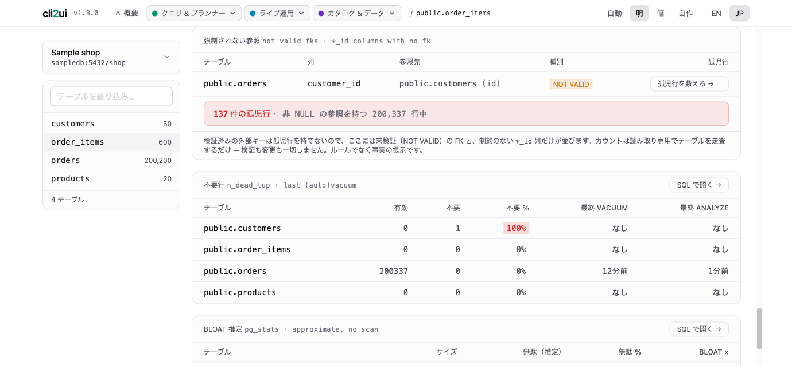
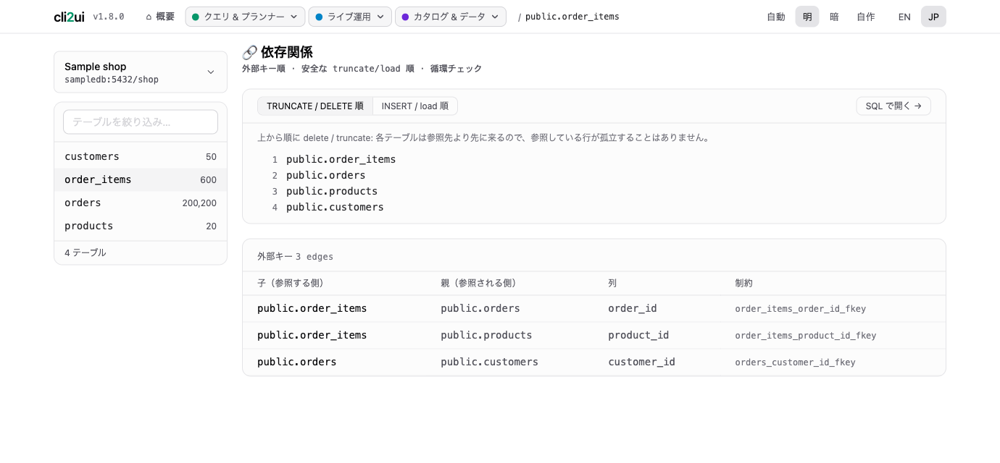
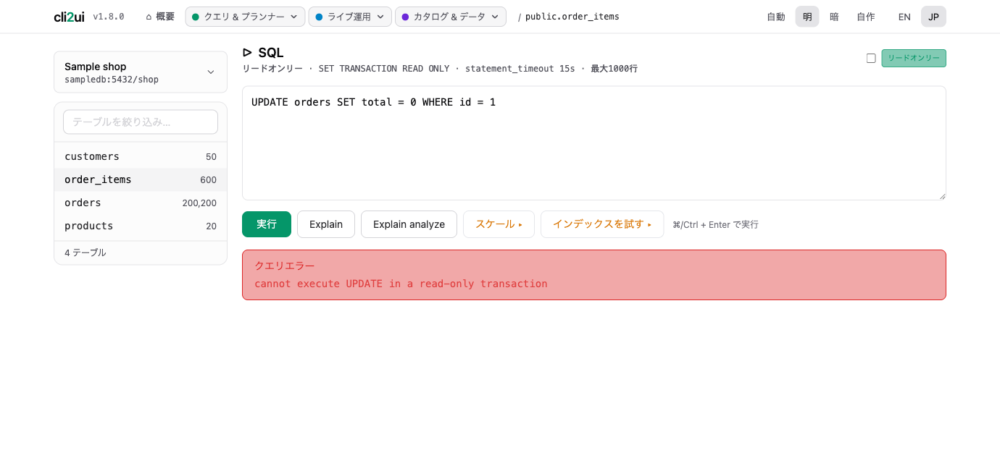
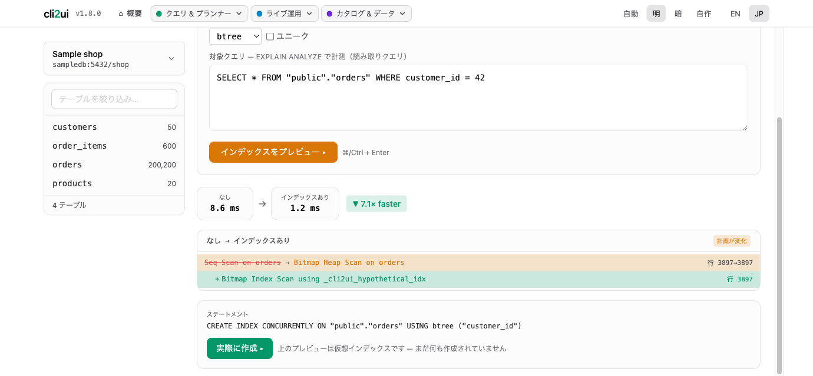
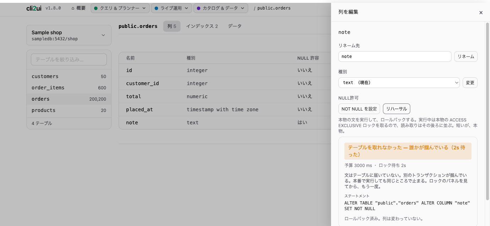
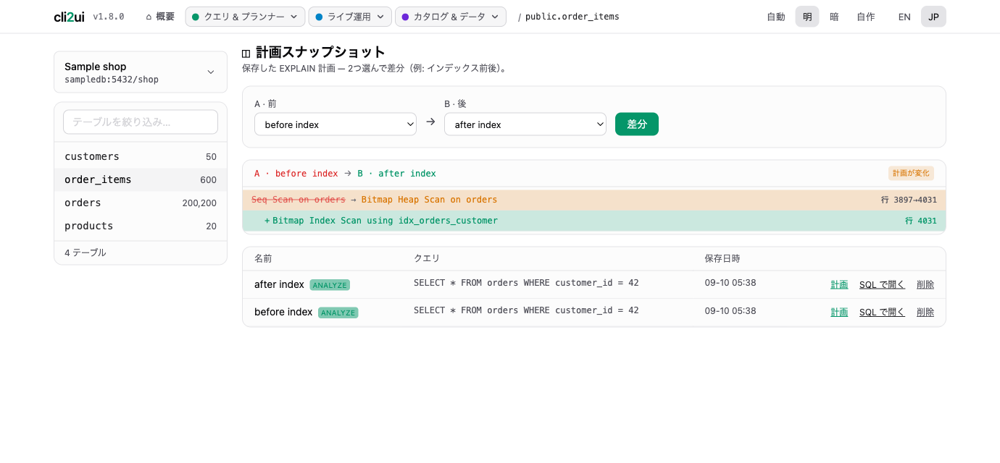
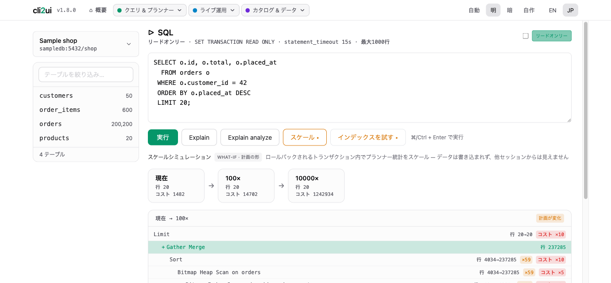

実際の画面
本物の DB クライアントが、自分のマシンで動く。
うろ覚えの DB CLI コマンドを Web UI に。AIなし、魔法なし — psql / mysql の操作をクリックに変え、 すべて自分のマシン上で動きます。
対象は アプリ開発者・個人開発者 —— DBA ではありません。 コンセプトは 「やろうと決めて3分後にはテーブルを眺めている」。 インストールの長旅も、接続ウィザードの迷路も、入れ子ツリーの探索もなし。 そして「デモDBはどこかで探してきてね」の宿題もなし —— サンプルデータは同梱、接続フォームに配線済みです。
押す前に、結果を見る。
危ないのは操作そのものより、やってみるまで分からないことです。 答えを出せるものは、先に出します —— どれも本番の DB に何も残しません。

NOT VALID な外部キーの違反行を、検証もせず何も変えずに数えます。

外部キーを辿って TRUNCATE の安全な順序と、その逆（投入順）を出します。何も消しません。

SQL ランナーは既定で読み取り専用トランザクション。SQL を解析して弾くのではなく、サーバー自身が書き込みを拒否します。
毎回ググるコマンドを、ワンクリックに畳む。
psql -c "SELECT * FROM
pg_stat_activity"
pg_dump -t users mydb
mysql -e "KILL 4242"
本物の DB クライアントが、自分のマシンで動く。
本物の DB クライアント風レイアウト。1仕事＝1パネル。
PostgreSQL と MySQL（8.0+）に対応 — 同じパネル群がどちらのエンジンでも動き、既定リードオンリー・ローカル限定の UI も同じです。以下のカードは Postgres の用語（pg_stat_activity、postgresql.conf）で書いていますが、MySQL では相当機能（SHOW PROCESSLIST、performance_schema、SET PERSIST）を使います。MySQL に相当機能がないもの（vacuum/bloat、プランナー what-if、レプリケーションスロット）は、空カードではなく「対象外」と表示します。
本番に当てる前に、捨てられるトランザクションの中で確かめる。ここが cli2ui の中心です。
作る前に、そのインデックスが効くか測る。
仮想インデックスを 1 トランザクション内で作り、EXPLAIN ANALYZE で前後を比べて ROLLBACK。本当に効くか確かめてから作れます。

ロックが取れなければ 2 秒で諦める。誰も待たせない。
ALTER / DROP / TRUNCATE / リネームは短い lock_timeout 付きで実行。開いたトランザクションの後ろで待ち続け、その後ろに全クエリが並ぶ事故を防ぎます。

実行計画を保存して、前と後を差分で見る。
インデックス追加の前後など、2 つの計画を差分表示。計画をメモ帳にコピペして見比べる作業から解放されます。

行数が 100 倍になったら、計画がどこで崩れるか。
同じクエリを実際の行数の 1× / 100× / 10000× で EXPLAIN（pg_class を一時改変し必ず ROLLBACK）。データ増加で計画の形が崩れる地点が見えます。

1 回聞けば分かることを、1 クリックで。
いま動いているクエリと接続。ワンクリックで止める。
pg_stat_activity から実行中クエリと接続を表示。ワンクリックで cancel / kill。
待たせている大元が、ツリーの先頭に出る。
待機連鎖をツリー表示：先頭に 大元のブロッカー（cancel / kill でその下すべてを解放）、その下に待たされているセッションを入れ子（pg_blocking_pids）。循環も検出。どのセッションもワンクリックで cancel / kill。
未使用・重複・bloat。事実だけで、助言はしない。
テーブルサイズ・未使用インデックス・インデックスのない外部キー・冗長（重複 / 先頭一致）インデックス・孤児行（NOT VALID な FK と制約のない *_id 列を、オンデマンドで read-only カウント）・dead-rows / vacuum・統計ベースの bloat 推定。すべて read-only の catalog 事実で、助言はしません。
安全な TRUNCATE の順番を、外部キーから出す。
外部キーのグラフをトポロジカルソートし、安全な TRUNCATE / load 順を提示。外部キーの循環も検知して名指しします。リードオンリー — 実際に truncate はしません。
入っている拡張と、入れられる拡張。更新できるものに印。
このデータベースに導入済みの拡張と、サーバーが導入可能な拡張を一覧（\dx ＋ pg_available_extensions）。更新可能バッジ付き。リードオンリー — CREATE EXTENSION は SQL ランナーで。
DB・スキーマ・ロールの一覧と、postgresql.conf の編集。
データベース・スキーマ・ロール（\l \dn \du）の一覧に加え、作成 / リネーム / 変更 / 削除（DB の TEMPLATE クローンも）を確認ゲート付きで。reload / restart バッジ付きの postgresql.conf エディタも。
書き込む操作は、毎回スナップショットとタイムアウトの内側。
既定はリードオンリー。書き込むと決めたときだけ書く。
既定はリードオンリーのアドホッククエリ（READ ONLY + 文タイムアウト + 1000行上限）。明示オプトインの書込みモードはコミットしますが、毎回 DB 全体の安全スナップショットと、DDL ボタンと同じ 2 秒の lock_timeout（チェックボックスなので、待つつもりのときは外せます）で保護されます。クエリ結果やテーブル全体を CSV / JSON でエクスポート可能。
危ない操作の前に、自動でスナップショット。
破壊的・構造的な変更の前に自動でテーブルスナップショット。アップロードしたダンプの復元は、メモリに溜め込まずクライアントツールへストリーミング。
準備状況・WAL 位置・接続中のスタンバイ・スロット。
準備状況チェック（wal_level / max_wal_senders）+ WAL 位置、接続中のスタンバイ、スロットの作成 / 削除。
実行した SQL を結果と時間つきで。ワンクリックで再実行。
実行した SQL をステータス・行数・所要時間つきで記録。ワンクリックで再オープンして再実行。
制約こそがプロダクト。
API キー管理に加え、スキーマを第三者へ送ること自体が、想定ユーザーにとっては論外です。クリックしたコマンドだけを、推測なしで正確に実行します。
DB 接続情報を預かった瞬間、責任と暗号化の話がプロジェクトを飲み込みます。ローカル完結だから誠実 —— DB 認証情報がネットワーク外に出ることはありません。
| レイヤ | 採用 |
|---|---|
| フロント | htmx + Alpine.js |
| バックエンド | Django |
| 管理用DB | SQLite |
| インフラ | Docker |
接続フォームは同梱のサンプル DB を指す状態で初期入力済み。Connect を押せば、もうテーブルを眺めています。リアルなデータ量が欲しければ、opt-in の Airlines デモ DB（チケット83万行超・jsonb 列つき）もコマンド2つで — 詳しくは README へ。
⚠️ ローカル完結の設計で認証はありません。localhost か信頼できるネットワーク内で動かし、公開インターネットには絶対に晒さないでください。